هر کاری که در پنل هست،
با یک تصویر.
این صفحه برای خودِ مدیر نوشته شده است. اگر تازه سایت را راه انداختهاید، از بخش ۱ شروع کنید؛ اگر فقط میخواهید موجودی را بهروز کنید، بخشهای ۳ تا ۶ کافی است.
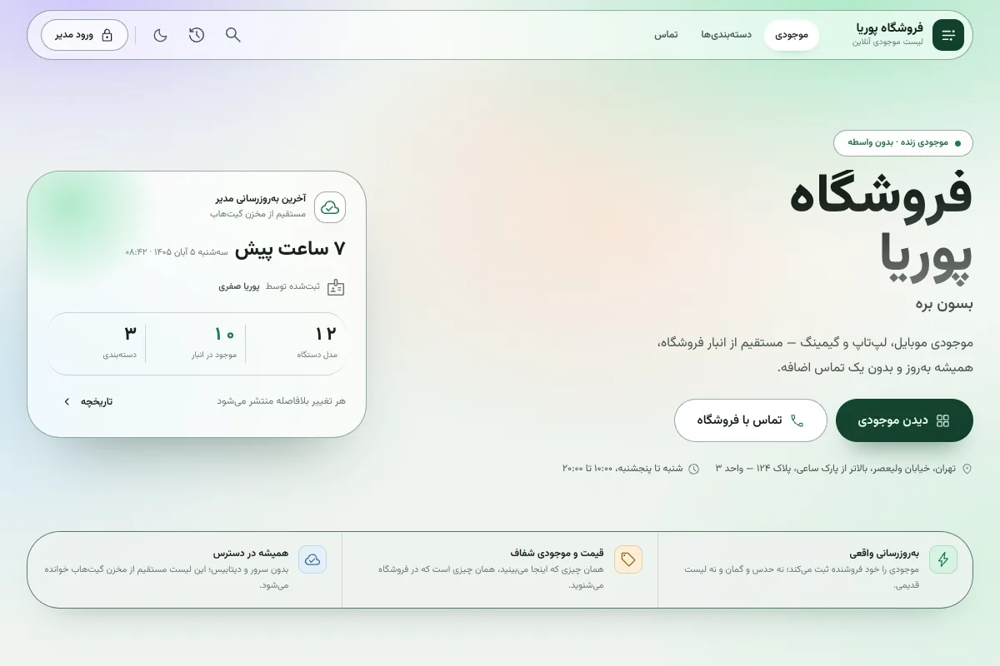
برگه تقلب: کارِ مورد نظر ← جای درست
اگر وقت ندارید کل راهنما را بخوانید، همین جدول معمولاً کافی است.
| میخواهم… | کجا؟ | بخش |
|---|---|---|
| موجودی یک کالا را عوض کنم | پنل مدیریت (خودکار باز میشود) ← + و − روی همان ردیف ← اعمال تغییرات | ۴ و ۵ |
| قیمت یا مشخصات را اصلاح کنم | پنل مدیریت ← ✏️ روی همان ردیف | ۴ و ۷ |
| کالای جدید اضافه کنم | پنل مدیریت ← افزودن کالا | ۴ و ۷ |
| یک کالا را کلاً حذف کنم | پنل مدیریت ← 🗑 روی همان ردیف ← اعمال تغییرات | ۴ |
| دسته یا فیلد جدید بسازم | پنل مدیریت ← دستهبندی | ۸ |
| اسم فروشگاه یا شماره تماس را عوض کنم | پنل مدیریت ← ⚙ بالای صفحه | ۹ |
| رمز ورود را عوض کنم | پنل مدیریت ← ⋮ ← رمز و توکن | ۱۰ |
| رمز و توکن را کامل از نو بسازم | پنل ← ⋮ ← رمز و توکن ← ریست کلی رمزها | ۱۰ |
| از لیست نسخه پشتیبان بگیرم | پنل ← ⋮ ← نسخهٔ پشتیبان | ۱۱ |
| همه کالاها را پاک کنم و از صفر شروع کنم | پنل ← ⋮ ← بازنشانی لیست | ۱۲ |
| چیزی روی سایت بهروز نمیشود | بخش رفع اشکال | ۱۵ |
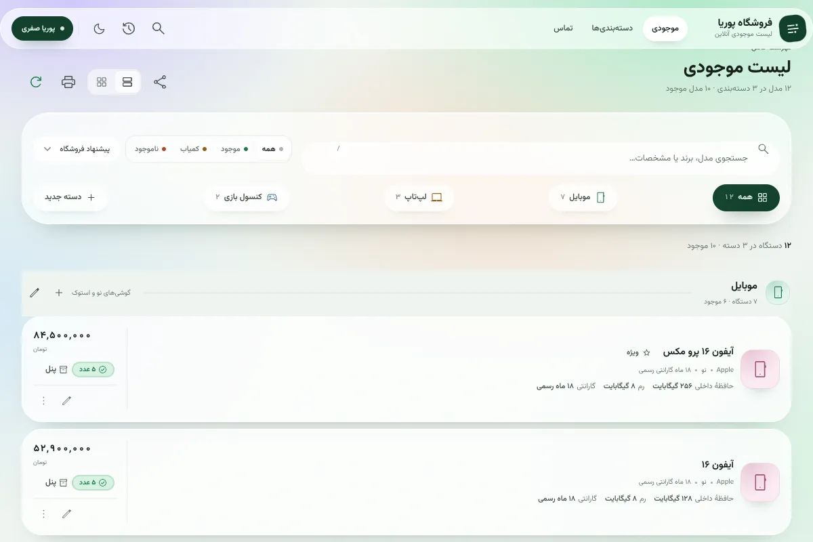
۱ گرفتن توکن از گیتهاب
سایت روی GitHub Pages زندگی میکند و برای نوشتن در مخزن به یک «کلید» نیاز دارد که همان توکن است. این کار فقط یک بار انجام میشود.
- به github.com وارد شوید ← عکس پروفایل ← Settings.
- در پایین ستون چپ: Developer settings ← Personal access tokens ← Fine-grained tokens.
- Generate new token را بزنید.
-
در Repository access گزینهٔ Only select repositories را انتخاب کنید و فقط
مخزن
Online_listرا بگذارید. - در Permissions ← Repository permissions ← Contents را روی Read and write بگذارید. (Metadata خودکار Read-only است.)
- Expiration: ۹۰ روز یا ۱ سال. تاریخش را یادداشت کنید تا دیر نشود.
- Generate token ← رشتهٔ
github_pat_…را کپی کنید.
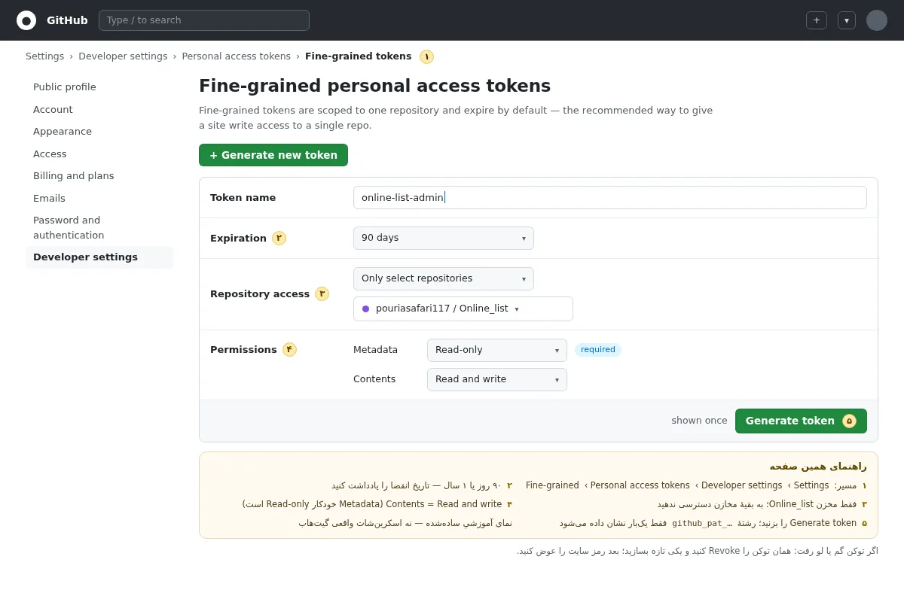
۲ ساختن رمز (صفحه راهاندازی)
توکن باید با یک رمز «قفل» شود تا هر بار لازم نباشد توکن را تایپ کنید. این کار در صفحهٔ
/setup/ انجام میشود که عمداً فقط روی کامپیوتر خودتان اجرا میشود.
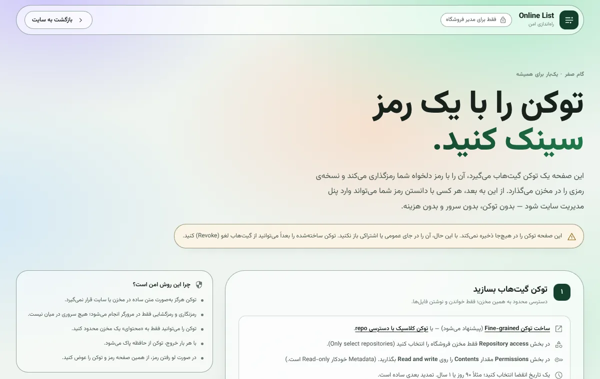
- در پوشهٔ مخزن، ترمینال را باز کنید و
npm startرا بزنید (یاpython3 -m http.server 8080). - در مرورگر بروید به
http://localhost:8080/setup/. - توکن را بگذارید، مالک/مخزن/شاخه را بررسی کنید، بررسی اتصال و دسترسی را بزنید.
- یک رمز قوی و تکرارش را وارد کنید (حداقل ۱۰ کاراکتر؛ مثلاً چهار کلمهٔ بیربط). زیر کادر رمز، تخمین زمان شکستن را میبینید؛ رمزی که زیر ۷ روز شکسته شود پذیرفته نمیشود.
- ساخت فایل امنیتی ← بعد نوشتن در مخزن گیتهاب.
- سه خط سبز دیدید؟ تمام. به سایت برگردید.
data/vault.json مینشیند
(PBKDF2-SHA256 با ۶۰۰٬۰۰۰ دور + AES-256-GCM). توکن خام هیچجا ذخیره نمیشود.
اگر رمز را عوض کنید، همین فایل بازنویسی میشود.
۳ ورود مدیر
دکمهٔ ورود مدیر بالای صفحه (و پایین صفحه در ستون «مدیریت فروشگاه») پنجرهٔ ورود را باز میکند.
- رمز اشتباه ← پیام قرمز زیر فیلد؛ بعد از چند تلاش، ۳۰ ثانیه صبر لازم میشود.
- ورود موقت با توکن ← اگر رمز را فراموش کردهاید یا فایل امنیتی هنوز ساخته نشده؛ مناسب تست، نه استفادهٔ روزمره (با بستن تب پاک میشود).
- پیشنمایش ← دیدن پنل بدون هیچ ورودی واقعی؛ انتشار در این حالت انجام نمیشود.
- نشست فقط در همان تب است؛ با قفل کردن یا بستن تب خارج میشوید.
data/vault.json در مخزن نیست یا خوانده نمیشود؛ بخش ۲ را دوباره انجام دهید
و مطمئن شوید آخرین گام («نوشتن در مخزن») سبز شده است.
۴ پنل مدیریت
بعد از ورود، خودکار وارد یک صفحهٔ کامل مدیریت میشوید (نه پنجرهٔ شناور): همهٔ کالاها با موجودی، دکمههای + و −، حذف، و دکمهٔ «افزودن کالا». هیچ نوار اضافهای روی لیست عمومی نمیماند؛ برای برگشتن، دکمهٔ ‹ بالای صفحه را بزنید. کار روزانه فقط همینجاست.
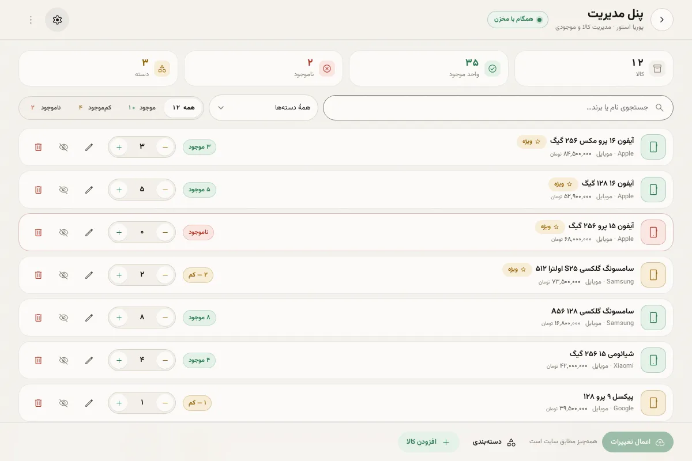
| در پنل | کار |
|---|---|
| چهار کارت بالا | تعداد کالا، واحد موجود، ناموجود و دستهها — همیشه بهروز. رنگها معنی دارند: سبز = موجود، زرد = کمموجود یا در انتظار تأیید، قرمز = ناموجود و حذف. |
| جستجو و «همهٔ دستهها» | کالا را سریع پیدا کنید؛ فیلتر همه / موجود / کمموجود / ناموجود. |
| − و + روی هر ردیف | موجودی همان کالا یک واحد کم یا زیاد میشود؛ عدد را هم میتوانید مستقیم تایپ کنید. + سبز و − زرد است تا اشتباه نگیرید. |
| ✏️ | ویرایش کامل کالا: نام، برند، قیمت، مشخصات، تصویر. |
| 👁 | پنهان/نمایش کالا در سایت بدون حذف. |
| 🗑 | حذف کالا؛ یک تأیید کوچک روی همان ردیف میپرسد. |
| افزودن کالا | فرم کالای جدید؛ فیلدهای مشخصات از قالب همان دسته میآید. |
| اعمال تغییرات | بعد از تأیید شما، همهٔ تغییرات با یک کامیت روی سایت مینشیند. |
| ⚙ و ⋮ بالای صفحه | ⚙ تنظیمات فروشگاه؛ ⋮ برای دستهبندی جدید، رمز و توکن، پشتیبان، تاریخچه، راهنما، بازگردانی، بازنشانی و قفل. |
| وضعیت کنار عنوان | «همگام با مخزن» یعنی همهچیز روی سایت است؛ «۱ تغییر در انتظار تأیید» یعنی هنوز نه. |
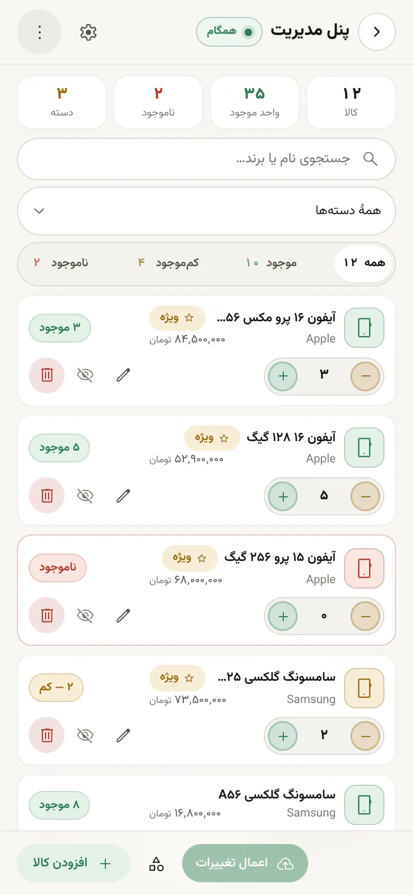
۵ کم و زیاد کردن موجودی
روتین روزانهٔ شما: در پنل مدیریت عدد موجودی را درست کنید و بعد «اعمال تغییرات» را بزنید.
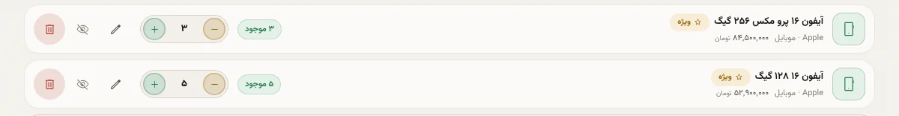
- در پنل، روی ردیف کالا − یا + را بزنید (یا عدد را تایپ کنید).
- بالای فهرست مینویسد چند تغییر در انتظار تأیید است؛ سایت هنوز چیزی نمیبیند.
- اعمال تغییرات را بزنید، پیام کامیت را ببینید و تأیید و انتشار را بزنید. تمام.
- عدد ۰ یعنی ناموجود؛ سایت خودش برچسب «ناموجود» میزند و کالا در فیلتر موجودی نمیآید.
- آستانهٔ «کمیاب» در تنظیمات است (پیشفرض: ۲).
- روی خودِ لیست سایت دست نمیزنیم: دکمهٔ موجودیِ هر کالا یک میانبُر به پنل است، تا همهچیز از یک جا و با تأیید شما اعمال شود.
- اگر تب را ببندید بدون انتشار، تغییر از بین میرود؛ پس همیشه یکبار «اعمال تغییرات» را بزنید.
۶ انتشار: تفاوت «ذخیره» و «دیده شدن»
تا وقتی اعمال تغییرات را نزنید و در کادر تأیید تأیید و انتشار را نزنید،
بازدیدکننده همان نسخهٔ قبلی را میبیند. انتشار یعنی نوشتن فایل
data/store.json در مخزن گیتهاب؛ همین یک دکمه، کل کار را انجام میدهد.
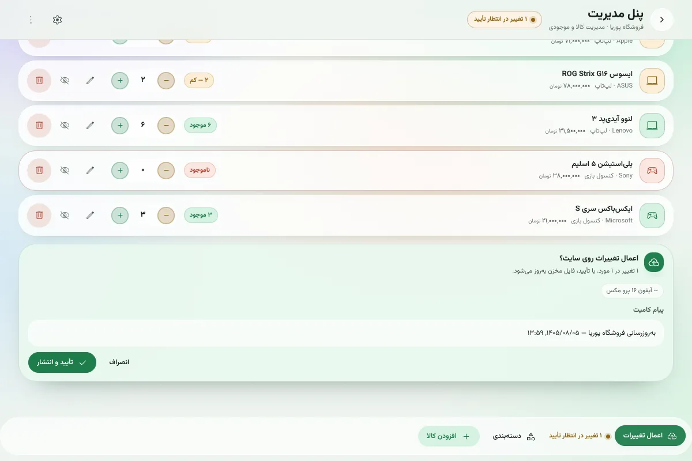
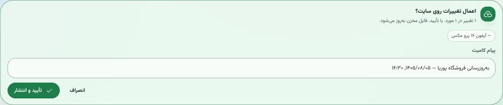
- پایین پنل، اعمال تغییرات را بزنید (یا Ctrl/⌘ + S).
- خلاصه را ببینید: چند دستگاه جدید، چند ویرایش، چند حذف.
- پیام پیشفرض («بهروزرسانی لیست موجودی — تاریخ») خوب است؛ میتوانید عوضش کنید.
- انتشار روی گیتهاب ← چند ثانیه صبر.
- پیام «تغییرات منتشر شد» با شناسهٔ کامیت.
۷ افزودن و ویرایش دستگاه
هر دستگاه یک نام، یک دسته، قیمت و موجودی دارد. بقیه اختیاری است؛ و بخش مشخصات خودکار از قالب همان دسته ساخته میشود تا فقط مقدار بنویسید.
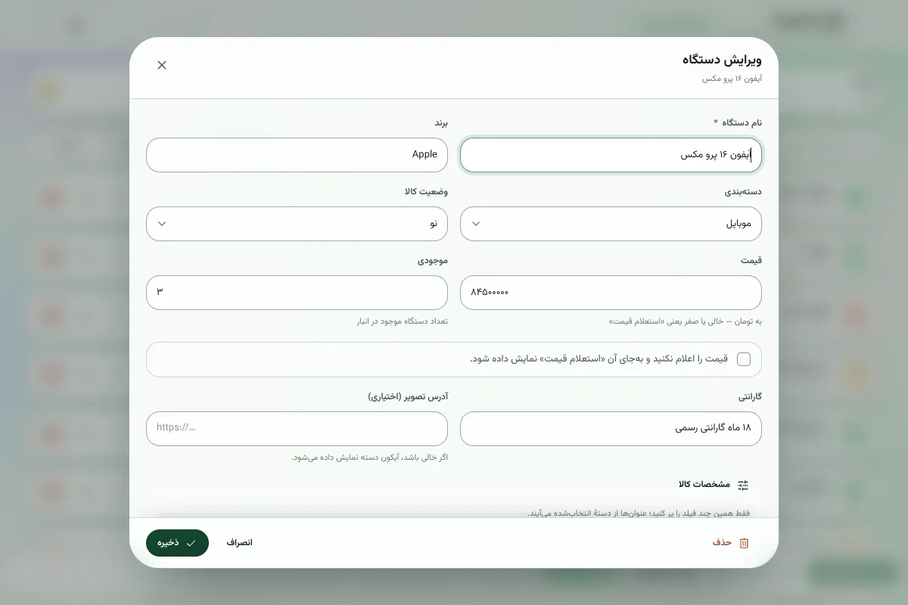
| فیلد | توضیح |
|---|---|
| نام | همان چیزی که مشتری میخواند؛ کامل بنویسید (مثلاً «آیفون ۱۶ پرو مکس ۲۵۶ گیگ»). |
| دسته | موبایل، لپتاپ، کنسول… انتخاب دسته، فیلدهای مشخصات را عوض میکند. |
| قیمت | به تومان، فقط عدد. برای «استعلام» خالی بگذارید. |
| موجودی | عدد صحیح؛ صفر یعنی ناموجود. |
| پیشنهادی | کارت بزرگ بالای سایت (حداکثر ۶ تا خوب است). |
| مخفی | از دید عمومی پنهان میشود، ولی حذف نمیشود؛ برای کالای موقت. |
| تصویر | آدرس اینترنتی تصویر (https). |
| مشخصات | فیلدهای قالب همان دسته؛ فقط مقدار را بنویسید. |
| مشخصات اضافه | برای همین یک کالا: مثلاً «ایراد فنی / خش کوچک روی قاب». حداکثر ۸ مورد. |
برای ویرایش: منوی ⋮ روی ردیف ← ویرایش دستگاه. برای حذف کامل: همان منو ← حذف دستگاه.
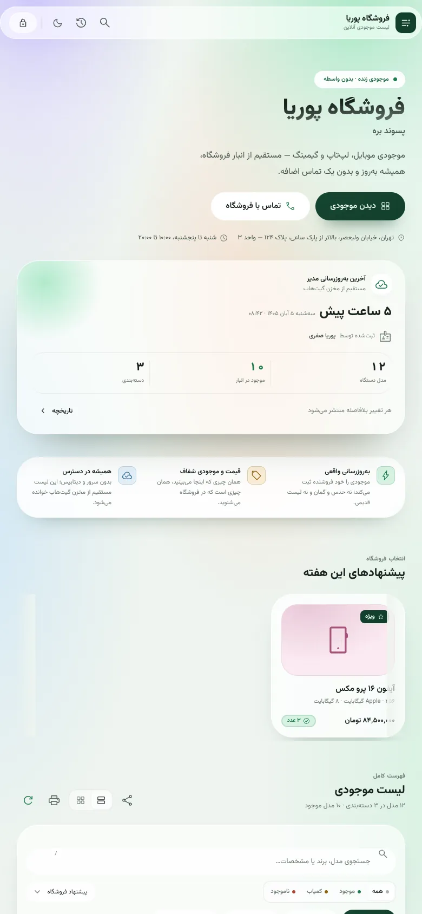
۸ دستهبندی و فیلدهای اختصاصی
هر دسته قالب مشخصات خودش را دارد: موبایل «حافظه، رم، رنگ»، لپتاپ «پردازنده، گرافیک، صفحه»، کنسول «نسخه». بعد از تعریف، فرم دستگاه خودکار همان فیلدها را نشان میدهد و لازم نیست هر بار تایپ کنید. برای شروع هم چند قالب آماده هست (موبایل، لپتاپ، تبلت، کنسول، ساعت، لوازم جانبی).
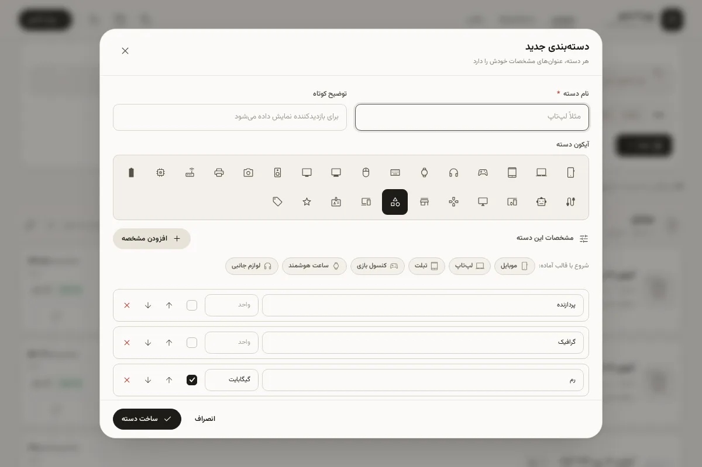
- در پنل، پایین صفحه دستهبندی را بزنید (روی گوشی همین دکمه فقط آیکون است)، یا از منوی ⋮ گزینهٔ دستهبندی جدید را انتخاب کنید.
- عنوان و یک آیکون انتخاب کنید.
- یک قالب آماده بزنید، یا با افزودن مشخصه ردیف بسازید: عنوان (اجباری)، کلید (لاتین، خودکار)، واحد.
- ذخیره، بعد اعمال تغییرات ← تأیید و انتشار.
۹ تنظیمات فروشگاه
آیکون ⚙ بالای پنل (یا ⋮ ← تنظیمات فروشگاه) فرم تنظیمات را باز میکند؛ نام، شعار، توضیح، تلفن، واتساپ، اینستاگرام، آدرس و ساعات کاری از اینجا عوض میشوند و در صفحهٔ اول و فوتر دیده میشوند.
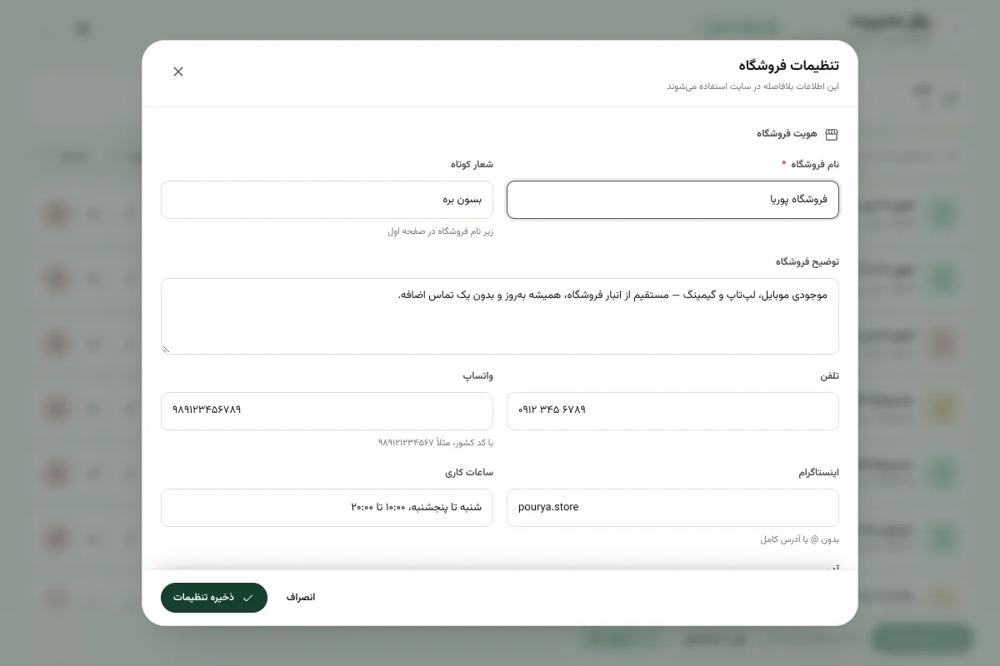
| تنظیم | اثر |
|---|---|
| پوسته پیشفرض | خودکار (سیستم) / روشن / تاریک — انتخاب هر بازدیدکننده روی دستگاه خودش اولویت دارد. |
| واحد پول | مثلاً «تومان» یا «تومان (هزار)». |
| اعداد | فارسی ۱۲۳ یا لاتین 123. |
| آستانه کمیاب | اگر موجودی ≤ این عدد باشد، «کمیاب» نمایش داده میشود. |
| نمایش قیمتها | خاموش: «استعلام قیمت». |
| نمایش تعداد دقیق | خاموش: فقط «موجود / ناموجود»، بدون عدد. |
| نام نمایشی مدیر | در «آخرین بهروزرسانی» و تاریخچه دیده میشود. |
۱۰ رمز و توکن
رمز را همینجا عوض کنید؛ لازم نیست دوباره سراغ صفحهٔ راهاندازی بروید و توکن هم دست نمیخورد. مسیر: در پنل ⋮ ← رمز و توکن.
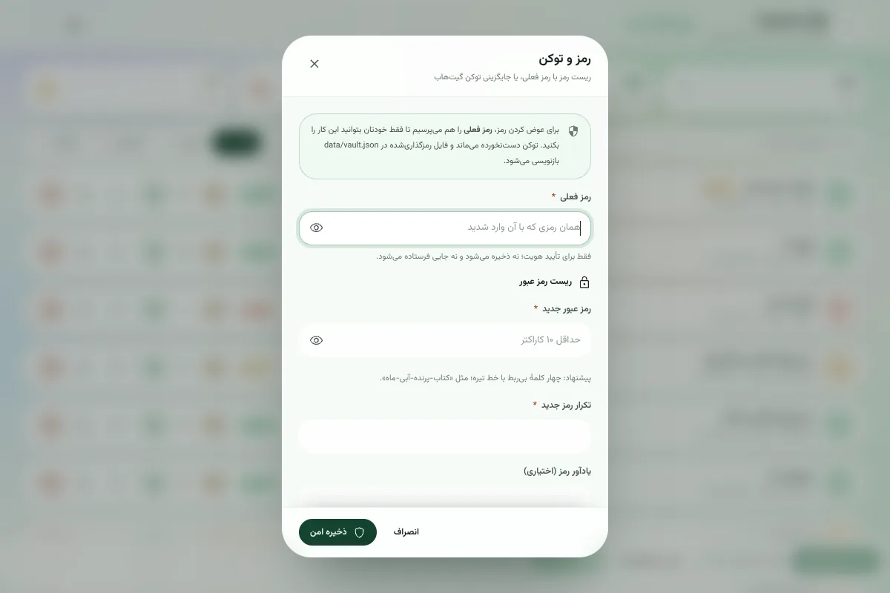
- برای تغییر رمز باید وارد شده باشید و در همان برگه رمز فعلی را هم بنویسید؛ یعنی فقط کسی که رمز را میداند میتواند عوضش کند.
- رمز جدید حداقل ۱۰ کاراکتر و با تکرار مطابق. زیر کادر رمز، تخمین زمان شکستن را ببینید؛ رمزی که با یک کارت گرافیک زیر ۷ روز شکسته شود پذیرفته نمیشود.
- بعد از تغییر، فایل
data/vault.jsonدوباره رمز میشود؛ روی دستگاههای دیگر باید رمز جدید را بزنید. - اگر ورود موقت با توکن کردهاید، تغییر رمز ممکن نیست چون فایل امنیتی باز نشده است؛ در عوض «ریست کلی رمزها» را بزنید.
- فیلد توکن جدید اختیاری است: اگر پر شود، همان لحظه توکن تازه رمزگذاری و جایگزین میشود. میتوانید فقط توکن را عوض کنید و رمز را خالی بگذارید؛ در این حالت رمز فعلی حفظ میشود.
ریست کلی رمزها (شروع از صفر)
پایین همان برگه، بخش ریست کلی رمزها است. این دکمه فایل امنیتی را از مخزن حذف میکند؛ یعنی هیچ رمز و هیچ توکنی روی سایت نمیماند و باید توکن تازه بگیرید و رمز تازه بگذارید. لیست کالاها، دستهها و تنظیمات فروشگاه دست نمیخورد.
- وارد شوید ← در پنل ⋮ ← رمز و توکن ← پایین برگه ← ریست کلی رمز و توکن.
- عبارت تأیید بازنشانی رمز را بنویسید. اگر خواستید، نسخهٔ پشتیبان فایل امنیتی را دانلود کنید.
- با تأیید،
data/vault.jsonاز مخزن حذف میشود و از حالت مدیریت خارج میشوید. - در
github.com/settings/tokensتوکن قدیمی را Revoke کنید و یک توکن تازه بسازید. - روی رایانه:
npm start←http://localhost:8080/setup/← توکن تازه + رمز تازه ← نوشتن در مخزن گیتهاب. - به سایت برگردید و با رمز تازه وارد شوید.
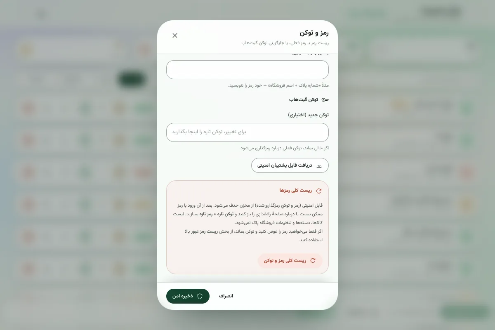
۱۱ پشتیبان و بازیابی
دریافت نسخه پشتیبان
یک فایل JSON کامل از همهچیز (فروشگاه، دستهها، دستگاهها، تنظیمات). ماهی یکبار کافی است.
خروجی CSV
برای اکسل؛ حاوی یک سطر برای هر دستگاه و ستونهای اختصاصی هر دسته. با BOM تولید میشود تا فارسی درست باز شود.
بازیابی از فایل
فایل پشتیبان را انتخاب میکنید، پیشنمایش میبینید و بعد انتشار میزنید. اگر خراب باشد، جایگزین نمیشود.
پشتیبان در ⋮ ← نسخهٔ پشتیبان است. بازیابی، کل لیست فعلی را با محتوای فایل عوض میکند؛ پس قبلش یک پشتیبان تازه بگیرید.
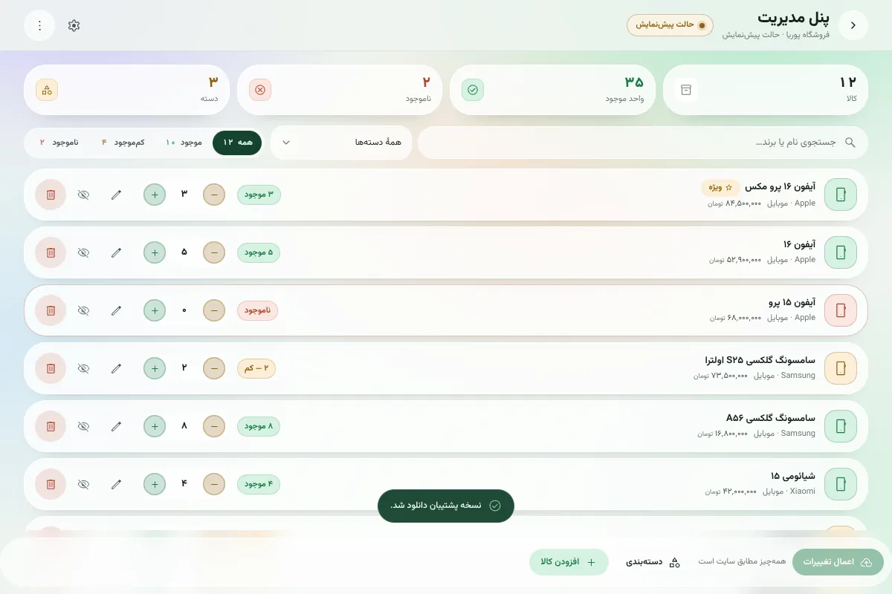
۱۲ بازنشانی همه دادههای لیست
وقتی میخواهید لیست را کامل خالی کنید و از صفر شروع کنید: در پنل ⋮ ← بازنشانی لیست. (همین بخش در «تنظیمات ← منطقه خطر» هم هست.)
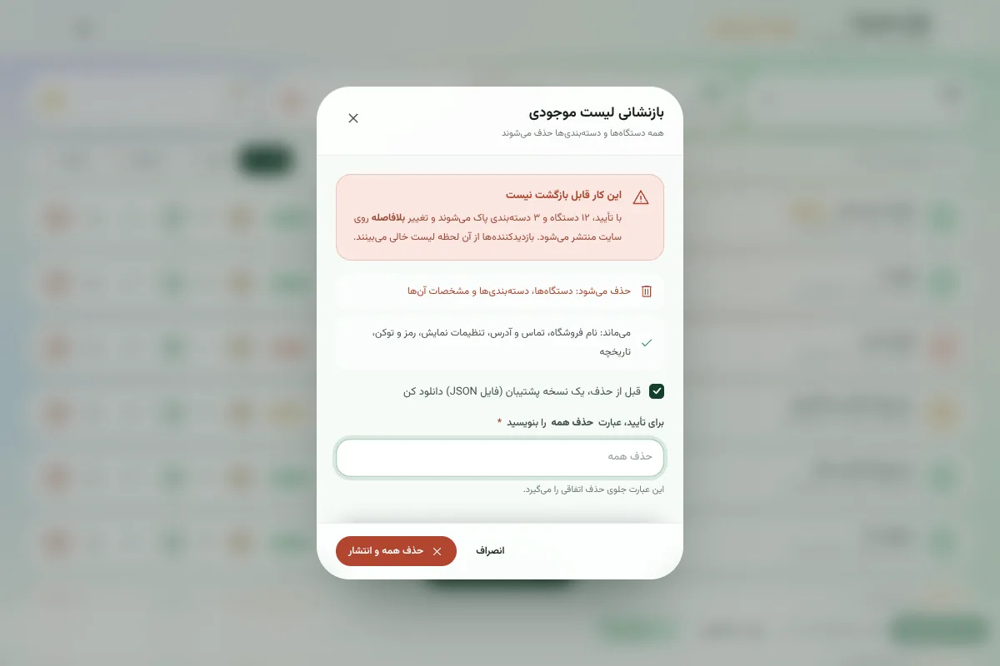
| حذف میشود | میماند |
|---|---|
| همه دستگاهها و همه دستهبندیها (و فیلدهایشان) | نام و اطلاعات تماس فروشگاه، تنظیمات نمایش، رمز و توکن، تاریخچه |
- قبل از حذف، نسخه پشتیبان دانلود کن را تیکدار بگذارید (پیشفرض روشن است).
- عبارت حذف همه را تایپ کنید.
- حذف همه و انتشار.
بعد از بازنشانی، سایت عمومی صفحهٔ «لیست خالی» نشان میدهد و دعوت به تماس میکند؛ برای شروع دوباره کافی است یک دسته و یک دستگاه بسازید.
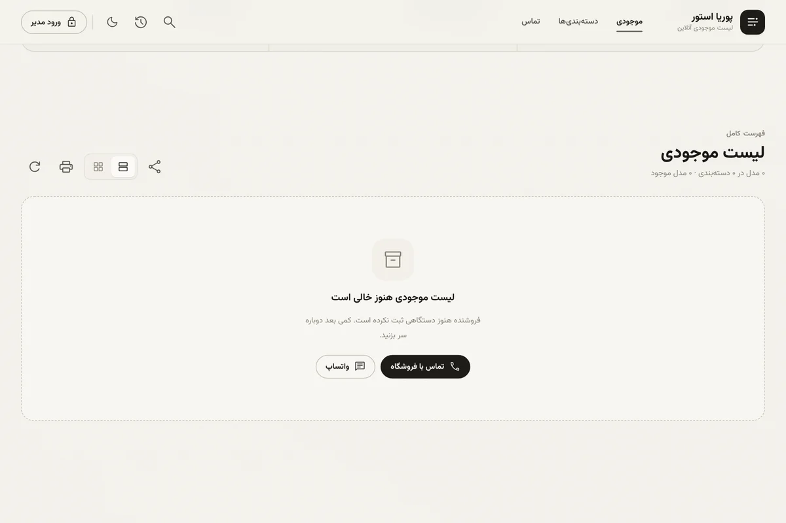
۱۳ پوستهٔ روشن و تاریک
سایت هر دو حالت را دارد. انتخاب هر بازدیدکننده در مرورگر خودش ذخیره میشود؛ تنظیمات فروشگاه فقط حالت پیشفرض را برای کسانی تعیین میکند که هنوز انتخابی نکردهاند.
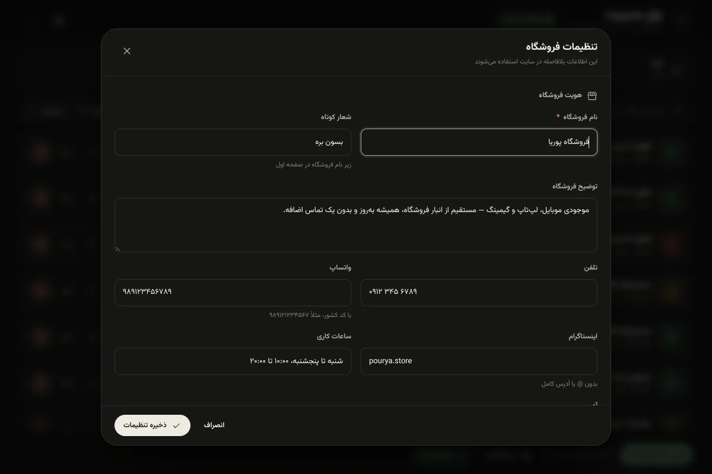
۱۴ امنیت به زبان ساده
| موضوع | واقعیت |
|---|---|
| توکن | رمزگذاریشده در data/vault.json؛ متن سادهاش هیچجا نیست. هنگام ورود فقط در حافظهٔ همان تب باز میشود. |
| رمز | هیچجا ذخیره نمیشود. اگر رمز را فراموش کردید، راه بازیابی نیست؛ باید صفحهٔ راهاندازی را دوباره اجرا کنید. |
| فایل رمزشده | برای همه قابل دانلود است؛ پس قدرت رمز تعیینکننده است. چهار کلمهٔ بیربط انتخاب کنید. |
| لیست موجودی | عمومی است. IMEI، سریال، قیمت خرید و اطلاعات مشتری را در آن نگذارید. |
| تاریخچه گیت | همهچیز برای همیشه میماند؛ چیزی که نباید عمومی شود را حتی یک بار هم ثبت نکنید. |
| دسترسی توکن | فقط همین مخزن، فقط Contents Read/Write، با تاریخ انقضا. اگر لو رفت: Revoke و رمز را عوض کنید. |
۱۵ رفع اشکال
| نشانه | علت | راهحل |
|---|---|---|
| «هنوز رمز مدیریت ساخته نشده» | فایل امنیتی در مخزن نیست یا خوانده نمیشود | بخش ۲؛ مطمئن شوید data/vault.json در شاخهٔ main هست |
| «رمز عبور نادرست است» | رمز اشتباه یا در دستگاه دیگر عوض شده | رمز فعلی را وارد کنید؛ اگر یادتان نیست، صفحهٔ راهاندازی + توکن |
| «دسترسی توکن کافی نیست» | توکن Read-only است | همان توکن را روی Contents: Read and write ببرید و دوباره وارد شوید |
| تغییرات روی سایت نیست | منتشر نشده، یا Pages هنوز نسخه تازه را نگرفته | «انتشار» را بزنید، یک دقیقه صبر و Ctrl+Shift+R |
| «تغییرات همزمان ثبت شده است» | از دستگاه دیگری هم ذخیره شده | صفحه تازه میشود؛ تغییرات شما میمانند، دوباره انتشار بزنید |
| «رمزنگاری در دسترس نیست» | صفحه روی http (غیر از localhost) باز شده | از آدرس HTTPS استفاده کنید |
| سایت قدیمی مانده | کش مرورگر یا سرویسورکر | Ctrl+Shift+R، یا بستن و باز کردن دوباره تب |
| صفحهٔ راهاندازی فرم را نشان نمیدهد | روی دامنهٔ عمومی باز شده (عمدی) | npm start ← localhost:8080/setup/ |